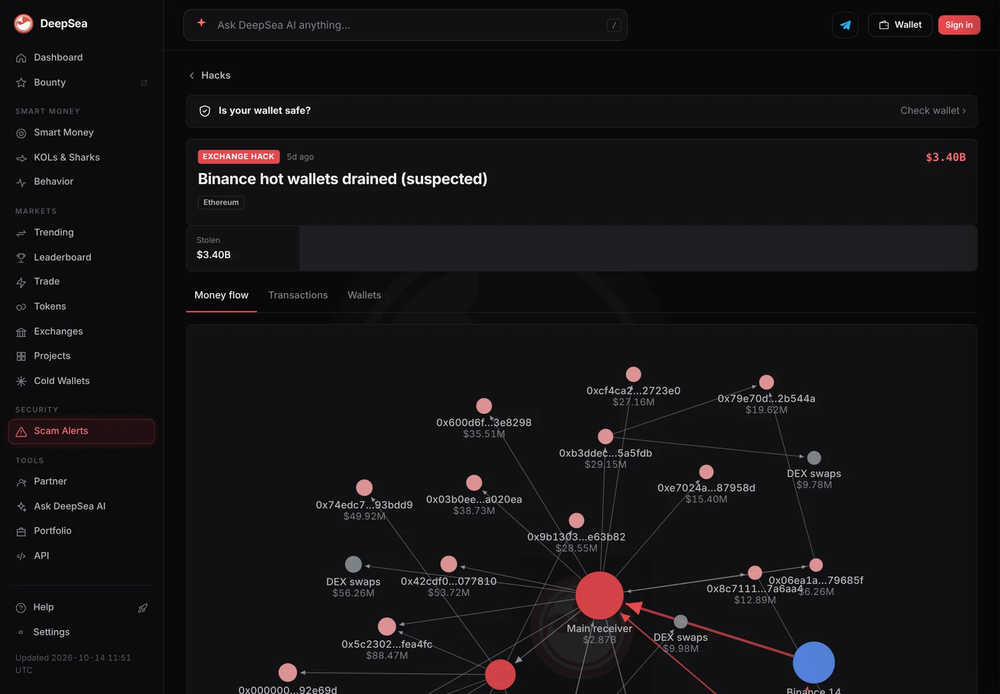

A fake job interview opened the door to Binance's $6.34 billion hack, its own report says
Binance's first incident report traces the October 29 theft to a staged hiring process, a poisoned coding test and a developer tool swapped for malware. Then nine minutes of hot-wallet transfers did the rest.
Key points
- Binance says about $6.34 billion in digital assets were hit on October 29, 2026; about $2.85 billion has been frozen or intercepted.
- The way in was a fake job offer: a staged interview ended with a coding "assignment" that installed malware on an engineer's work computer.
- The malware quietly replaced pyenv, a normal developer tool, and antivirus did not catch it. Binance says users will not pay for the loss.
 What DeepSea's data shows
What DeepSea's data shows
DeepSea's hack tracker shows the Ethereum side of the theft as a money-flow map. It lists $3.40 billion stolen on Ethereum, flowing from the hot wallet labeled Binance 14 into one main receiving address that took in about $2.87 billion, then splitting into dozens of smaller wallets and DEX swaps. Binance's $6.34 billion figure is larger because it also counts the XRP, SOL, OP and BTC sent on other chains.
Want to check whether your own wallet ever touched these addresses? DeepSea's Binance hack page lists every wallet in the flow.

Data: DeepSea (desea.io).
How the trap worked
Binance published its first incident report on November 3, 2026, five days after the largest crypto theft on record. The exchange says the attack was not one mistake but "a sophisticated, multi-stage campaign" built over months.
It started like a normal job hunt. According to the report, a Binance software engineer was approached on a legitimate job platform by someone posing as a project director. A video interview with a supposed HR person followed, and the "recruiter" even shared a personal social media profile to look real. A second interview with a supposed CEO ended with a coding assignment: a repository the engineer was asked to set up on his work computer.
That setup step was the trap. Binance says malicious code ran during installation and replaced a legitimate component of pyenv, a common tool developers use to manage Python versions, with a malicious copy that called out to the attacker's server. The report calls it 0-day malware that the company's endpoint protection did not detect at the time, and says the attacker also wiped traces of the break-in.
Nine minutes on October 29
On October 29, between 17:15 and 19:56 UTC, the attacker logged onto a Binance engineer's computer, used credentials stolen from a wallet DevOps engineer, deployed a container and ran a malicious script, the report says. That gave them access to an internal wallet signing service, which they used to send transactions outside Binance's normal withdrawal process.
Between 20:05 and 20:09 UTC, five Binance hot wallets sent 233.46 million XRP to an attacker address. Hot wallets on Solana and Optimism sent about 970,500 SOL and 44.2 million OP, and another hot wallet sent 18,270 BTC.
The attacker then used Ethereum's EIP-7702 feature, which lets a wallet hand some control to a smart contract. By sending 50 signing transactions, they set up permissions that kept working even after Binance paused withdrawals. Because the hot wallet used MPC (the key is split into pieces, with no single private key), there was no quick way to cancel them. Binance cleared the last delegation at 00:10 UTC on October 30.
Who pays, and who did it
Binance says it will absorb the loss, not its users, and that 98% of the affected token assets had been replaced by October 31, verifiable on its Proof of Reserves page. It is still buying the harder-to-find assets. About $2.85 billion has been frozen or intercepted with the help of law enforcement, blockchain analytics firms and partners.
Binance's report cites the FBI, which says North Korea is responsible. The exchange says it has rebuilt the affected wallet system and internal AI tool, replaced devices, retired the affected engineers' credentials and scanned every employee device. Some technical details will stay private, and independent security firms will review the findings.
LC Insight analysis
This section is our reading of the facts above, not a statement of fact.
- The scariest part is how ordinary the first step looked. A recruiter, an HR call, a take-home test: every developer has done this, and nothing about it feels like a hack.
- For readers, the lesson is simple: never run a stranger's "test project" on a computer that holds your wallet or work keys. Use a separate machine or a throwaway virtual machine.
- The EIP-7702 part matters for the whole industry. Pausing withdrawals did not stop the drain, because the permissions lived on-chain. Exchanges will need a way to cancel delegations fast.
What's next
- Binance's full post-mortem and the independent security review
- How much of the frozen $2.85 billion comes back
- Whether other exchanges report the same fake-recruiter approach
Disclaimer. This article is based on public information and the sources listed below as of the update time shown. It is for information only and is not investment, legal or tax advice. Figures may change as companies and authorities publish new data.